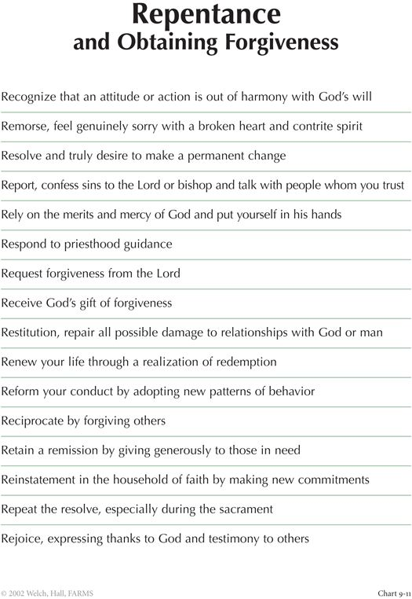
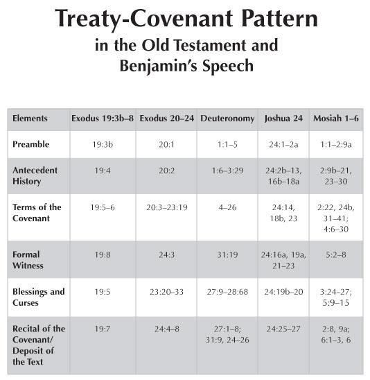
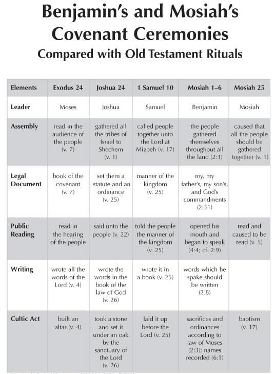

At this point, a little over halfway through his speech, when King Benjamin looked around, he found that his people had all fallen “to the earth.” There was a big crowd, and we may wonder why they all had responded with the same physical response and all at the same time. The text says that the fear of the Lord had come upon them. The word for “to fear” and the word for “to revere” are related. In this context, the people’s fear most likely refers to a deep, powerful reverence for God, as when someone is a God-fearing person. Of course, the fear may also have been connected with the power that they knew the Lord had to administer eternal justice. They could also have been afraid because of their inadequacies and the seriousness of the covenant into which they knew they would soon be entering.
In Jerusalem, on the Day of Atonement, when the people heard the sacred name of the Lord pronounced by the High Priest, they fell down as if they were in the Lord’s sacred presence. Similarly, in Lehi’s dream, the people fall down when they reach the Tree of Life and partake of the fruit: “ and they came and caught hold of the end of the rod of iron; and they did press their way forward, continually holding fast to the rod of iron, until they came forth and fell down and partook of the fruit of the tree” (1 Nephi 8:30). There were four groups of people that had worked their way to the Tree of Life. Three of the groups either do not make it or soon fall away. Those who stay faithful are the ones who fall down when they get there, and make themselves as humble as the earth. Talk about being humble! When we as modern people bow down, we typically just bow our heads, but the ancient people bowed their bodies. When they came into a divine situation or into the presence of a great ruler, like a king or emperor, they would prostrate themselves in front of that person.
“And they all cried aloud with one voice.” How did this happen? This was most likely a coronation-affirmation or covenant-making ritual, and the people may well have known what they were supposed to say in this situation. That does not mean that they were not sincere in what they were doing. This was not just some kind of prepared, mechanical ritual. For example, when we go to a temple dedication, we do the Hosanna Shout, and we all know what we are supposed to say, but since you know that you only say or do that under certain circumstances it has a lot of meaning for us.
It was a similar thing among King Benjamin’s people. When they were saying, “Oh have mercy and apply the atoning blood of Christ,” they were saying, in effect, “We want that blood to be sprinkled on us and to purify us,” just as the High Priest traditionally would make the all-important atoning sacrifice on the Day of Atonement and then sprinkle purifying blood on the altar of the temple. They had just been told that the only way to overcome the natural man is through the atoning blood of Christ, so they especially wanted that blood applied to them. A similar covenant-making episode and vocal response from the people is found when Joshua and his people made a covenant with the Lord (Joshua 24:16, 21–26).
As was mentioned in connection with Mosiah 2:5 in the previous week’s discussion, the fact that each family was sitting in their tent with the door open to the temple, links Benjamin’s speech with the Feast of Tabernacles. That was the traditional time for the coronation of kings in ancient Israel. In addition, the Day of Atonement, which was the highest and holiest day of the year on the ancient Israelite calendar, came on the tenth day of the seventh month, with the week of tabernacles following right afterwards, ending with a day of great joy and rejoicing for the teaching (torah) of the Lord.
In Latter-day Saint temples, initiates are washed, anointed, and purified. Although, at that point, we do not stand in the presence of God, we are preparing to enter into a covenant with God, and because we are entering into a relationship with God, we must be pure in order to even be in that close proximity with the divine. So, this word pure in the statement, “That our hearts may be purified,” in the middle of verse 2, similarly indicated the people’s willingness at that point. Their desire to do this showed that they were ready to do what would be coming next. They were prepared to enter into, or to renew, the covenant. They desired the benefits of the Atonement, becoming pure again and reunited with God in mind, body, and spirit. They knew that the Atonement had been prepared from the foundation of the world and also that salvation could only come through its sanctifying power. They were then filled with joy, having receive a remission of their sins and peace of conscience. That feeling of having a clear conscience before God, knowing that you have done what you could and then continuing with faith in Jesus Christ, is the sweet blessing of the Holy Ghost accepting of our sacrifice and commitment to obey.
In verses 9 and 10, Benjamin gives his people a powerful set of ten instructions! And how needed these mandates still are today. (1) First of all, we must believe that God exists. (2) Next, we need to trust “that he created all things, both in heaven and in earth.”
Yet it is not enough to simply know that he created all of this. (3) We have to believe “that he has all wisdom” and that he has a plan for us individually and collectively. (4) Furthermore, we must believe that he has “all power, both in heaven and in earth” to carry out his plan, and if he does, then (5) we have to believe that we cannot comprehend all that God comprehends. We cannot figure it all out alone.
This is sort of like King Benjamin’s own Articles of Faith: “Believe, believe, believe, believe, believe.” They and we must believe certain inevitably true things about ourselves and about God.
Does this mean there might be questions to which we do not know the answers? As much as we may hate to admit that we don’t know everything, the answer is, “Yes there are many things we do not yet know!” How do you think Benjamin learned that there were things he didn’t know, and even that his people didn’t know? At least in part, he surely learned this from his experience with the angel. He had just an experience that went way beyond normal, and whatever he knew before, he certainly now knew that man cannot comprehend all things.
Knowing that there are a lot of things we don’t know, we may wonder what to do next.
And what did Benjamin say next? There was another set of five things for them (and us) to do. Once we know that we do not know everything that God can comprehend, we must (1) believe that we have to repent of our sins, and (2) we must forsake them. It is not enough to repent; we must also forsake, leave them behind, leave them to wither.
This will bring us to the next step, (3) humbling ourselves, and then (4) asking sincerely for forgiveness and things we need and truly desire in order to repent. This is so that God can give them to us. Among other things, he will give us the knowledge we seek.
God can and will forgive us but only if that is what we desire. Benjamin’s people wanted the atoning blood of Christ to be applied to them so they could be purified and forgiven.
We also have to desire this and seek for it. And then, in the end, Benjamin requires that, if we believe all these things, (5) see that ye do them. These five imperatives match Benjamin’s previous five requirements of what we must believe. Benjamin understood that belief without doing is dead.
After Benjamin’s five “believe” statements and five “repent” statements (4:9–10), he added two “knowledge” statements (4:11), he followed it with two mentions of the word “remember,” particularly that we must “retain in remembrance” what God has done for us (4:11). It is not enough to know something; you can forget it next week. We must not only know it and remember it, but always retain it in remembrance. Notice how Benjamin has moved from one thought to another. He did not use a simple repetition; he

Figure 1 John W. Welch and John F. Hall, "Repentance and Obtaining Forgiveness," in Charting the New Testament (Provo, UT: Neal A. Maxwell Institute for Religious Scholarship, 2002), 9-11.
used elevation of the thought as it went along. He was guiding people step by step. He moves here from having believed, then done, then known, and then remembered, then humbled ourselves, then called on the name of the Lord daily, and at that point you shall rejoice and be filled with love. This will allow us to “retain a remission of our sins,” grow in the knowledge of the glory of God, and then to know what is just and true. We achieve this goal one step at a time, and Benjamin marvelously sets out the step-by-step sequence. All of this is so that we can obtain a remission of our sins.
And remember that remembering in this sense is not just a matter of remembering intellectually. We truly remember when we remember to do certain things. And thus, toward the end of the next section of his speech, Benjamin will return again precisely to the idea of retaining a remission of sins (see 4:26). When I was a bishop, a girl who had transgressed—not terribly, but it was very troublesome to her—came to me, and she tried to repent. She kept coming back, and I would give her some ideas and she would feel better. Then she would come back two weeks later feeling bad again. She wondered why those bad feelings kept coming back. Benjamin’s words came to my mind, and I realized that her problem was that she had not retained a remission of her sins. I had never heard anyone talk about this step in the repentance process; but I had recently had Benjamin on my mind. So we read out loud Mosiah 4:26, together with its injunction to “retain” a remission of sins by giving to the poor, feeding the hungry, visiting the sick, and administering to their relief both spiritually and temporally. This additional step is actually a step in the repentance process. When we think of the R’s of repentance, certainly retain is one we should add.
That was a “Benjamin moment” for me, in which these words took on powerful life and meaning, impelling us to go and do something. We set out some things that she was going to go do, and two weeks later she came back to my office and said, “Bishop, it has worked! I feel totally different.” I told her to keep at it in order to always retain that remission. Benjamin has given us really profound guidance.
At this point, we enter into Section 6 of Benjamin’s speech.
What happens next in a covenant-making context? In the book King Benjamin's Speech: “That Ye May Learn Wisdom” there is a chart (Figures 2, 3) that shows that treaties or covenant-making ceremonies as they are called in the ancient world, had several common elements.

Figure 2 John W. Welch and Greg Welch, "Treaty-Covenant Pattern in the Old Testament and Benjamin's Speech," in Charting the Book of Mormon, chart 100.
First, in the recording of ancient covenant or treaty making ceremonies, there was typically some kind of historical preamble. Then there was a discussion about the antecedent history involving how the people got to where they were, and what the relationship had been between the parties who were going to enter into the covenant.
Benjamin gave that antecedent relationship in chapter 2 where he spoke of how mankind was created out of the dust of the earth. God created everything, and that is part of their relationship.

Figure 3 John W. Welch and Greg Welch, "Benjamin's and Mosiah's Covenant Ceremonies Compared with Old Testament Rituals," in Charting the Book of Mormon, chart 101.
Then the terms of the covenant were stated in a contract mode. There were witnesses who wrote the names of the people entering into the covenant (we will address this later in the sixth chapter of Mosiah).
Next there were blessings and curses—blessings if the parties kept the covenant, and curses if they did not. And finally came time to write and deposit the covenant, making it a permanent, written record that people could keep and remember.
This pattern of covenant making is followed quite strictly in Benjamin’s speech. In section 6 of the speech (which is Mosiah 4:3–30), we find the stipulations with some of the promises of rewards for obedience and some of the curses if they did not keep the covenant.
The first requirement is to have no thought or desire or “mind to injure one another” (4:13). Wrong doing begins with wrongful thinking.
Next we must “live peaceably” (4:13). We must seek peace. Peace does not just happen.
It must be created, desired, worked for, and maintained.
And third, Benjamin taught that if people have done good things to us, we must reciprocate and “render to every man according to that which is his due” (4:13). This may involve paying compensation, or extending human dignity, or giving verbal praise and recognition for what they have done. “Rendering” is a very powerful concept. It means to “rend,” to “tear open” and give generously and willingly. One of my granddaughters has been babysitting for a young mother in our stake who has been very grateful for what my granddaughter has done, and she has abundantly and sincerely praised her for her being able and willing to take care of these little children. My granddaughter goes over there voluntarily. She loves going over and helping because she is getting this positive praise. It has had a powerful effect on her whole personality, even giving her confidence in what she is doing in school and a lot of other things. She gets paid a little bit for the babysitting, but she does not go for the money. She goes for the praise and kind recognition for the service she has given.
Toward the end of this section of his speech, Benjamin returns to this theme. In Mosiah 4:28, it is interesting that he specified that an individual had to return the thing that he or she had borrowed. In ancient Mesopotamian laws dealing with loans, if someone borrowed a cow or an ox to do their plowing, or borrowed a donkey, a borrower could not just give another donkey. They had to return the very animal that they borrowed, and that helped to preempt arguments about equivalent value and things like that.
Thus, if they borrowed something, they needed to give back the actual thing. Benjamin’s people, likewise, were probably not very far advanced financially. No ancient society had what we would call banks or mortgage companies. They had weights and measures for handling sales at the market place, but most didn’t have currency. Thus, it is interesting that Benjamin wanted people to be precise in their paying back of anything that they owed someone else.
But the point here is not just that we give it back. Benjamin wants to be sure that there are no arguments, no disputations, but that by giving back “according as he doth agree,” that person avoids committing sin himself and also prevents an argument that might lead your “neighbor to commit sin also” (4:28).
Once they had learned how to deal with property and deal with neighborly relations, the next thing they had to do was to look after the family. Benjamin taught his people, and consequently us, that they were to teach their children the laws of God. They could not be worthy to enter into this covenant if they would not agree to teach the children the laws of the covenant. Building righteous homes is a crucial part of entering into that covenant.
This requirement—that parents who enter into the covenant have to be willing to agree to teach their children these principles—is also found in Deuteronomy 4:9, where Moses is promulgating the covenant with all of Israel. He said, “Only take heed to thyself, and keep thy soul diligently, lest thou forget the things which thine eyes have seen, and lest they depart from thy heart all the days of thy life: but teach them thy sons, and thy sons’ sons,” and at the end of Deuteronomy 4:10, he said, “That they may learn to fear me all the days that they shall live upon the earth, and that they may teach their children.”
Also, two chapters later, in Deuteronomy 6:6–7, it says, “And these words, which I command thee this day, shall be in thine heart: And thou shalt teach them diligently unto thy children, and shalt talk of them when thou sittest in thine house, and when thou walkest by the way, and when thou liest down, and when thou risest up.” Alma used the same phraseology. He knew this because it was in the Law of Moses which they were living strictly. Deuteronomy 6:8–9 continues, “And thou shalt bind them for a sign upon thine hand, and they shall be as frontlets between thine eyes. And thou shalt write them upon the posts of thy house, and on thy gates,” so that as people came in and out of the house, they would remember those “words”.
Do you think that Benjamin knew Deuteronomy? I think so. It was a covenantal restatement of the law of Moses. Benjamin was clearly aware of Deuteronomy 17 and the paragraph of the king, which he paraphrased in Mosiah 2. Now he turns to family duties as an integral part of his royal covenant.
Did Benjamin recognize that parents teaching their children is an implicit part of the covenant? We could think that this statement was just a random moralizing comment by Benjamin But here Benjamin is doing more than giving nice advice. He has already mentioned that Christ’s Atonement embraces the eternal welfare of little children (Mosiah 3:16–17, and now he adds: “Not only shall we all be happy at home,” but children need to be raised in righteousness. They are part of the covenant too. Much depends on their condition and future faithfulness, and so there is a lot going on here.
As a central requirement of his covenant text, Benjamin next turned to the need to give to the poor: “Ye yourselves will succor those that stand in need of your succor; . . . ye will not suffer that the beggar putteth up his petition to you in vain, and turn him out to perish“ (4:16).
Again, Benjamin has the covenant text of Deuteronomy in mind. Deuteronomy 15:7–11 says, “If there be among you a poor man of one of thy brethren within any of thy gates in thy land which the Lord thy God giveth thee, thou shalt not harden thine heart, nor shut thine hand from thy poor brother: But thou shalt open thine hand wide unto him, and shalt surely lend him sufficient for his need, in that which he wanteth” (15:7–8).
Likewise, Benjamin says that we are to supply those in need “according to their wants” (4:26). What does the word wants mean in this context? Nowadays, to want often means to desire, but in Old English it meant to lack something. That was what the King James translators were communicating with the word wanteth in Deuteronomy 15:8. Notice also that Deuteronomy speaks here of loaning, or lending, and that Benjamin does this also (Mosiah 4:28).
Deuteronomy 15:9 then cautions, “Beware that there be not a thought in thy wicked heart, saying ‘Lo, the seventh year, the year of release, is at hand.’” What the book of Deuteronomy is worried about is that people would remember that once every seven years all debts would be forgiven, so in the sixth year, they may be reluctant to loan anything, because if it were not yet payed back, the debt would be cancelled and the borrower would then be excused. The law said that they could not use that as an excuse.
Benjamin also addresses the problem of people judging the poor and rationalizing or making excuses so that they do not feel obligated to give to the poor (Mosiah 4:17, 22), but rather “turn him out to perish” (4:16). But anyone who makes such excuses “perisheth forever, and hath no interest in the kingdom of God” (4:18).
Moreover, Deuteronomy 15 goes on to say, “Thou shalt surely give him, and thine heart shall not be grieved when thou givest unto him: because that for this thing the Lord thy God shall bless thee in all thy works, and in all that thou puttest thine hand unto. For the poor shall never cease out of the land: therefore, I command thee, saying, Thou shalt open thine hand wide unto thy brother, to thy poor, and to thy needy, in thy land” (15:10–11). As one member of the class commented: “Unfortunately, sometimes, our giving comes with measurement. Good is to give. Better is to give without measuring.” All this is a part of the covenant, and just as teaching our vulnerable children is a part of the covenant, Benjamin spoke equally about ministering to the poor who are always at great risk.
Underlying all of Benjamin’s covenant stipulation of generosity is the logic of talionic justice (Deuteronomy 19:19). It is right and fair to get back what we have given out, eye for eye, “for that which ye do send out shall return unto you again, and be restored,” good for good, mercy for mercy, and evil for evil (Alma 41:13–15).
This all makes logical sense as well as theological certitude: For “if God … doth grant unto you whatsoever ye ask that is right, in faith, believing that ye shall receive, O then, how ye ought to impart of the substance that ye have one to another” (Mosiah 4:21).
Since Benjamin’s people had just asked God to be forgiven, blessed, and purified (4:2), it would be unbecoming of them as beggars unto God not to remember equally the poor and to give to those who put up their petition to them for relief (4:20).
We know that we can be forgiven and change our lives, but if we do not act according to and consistent with the covenant that we entered into, it is as if we had not been forgiven in the first place. Seeing King Benjamin’s Speech as a “manual for discipleship,” Elder Maxwell has taught, “Much emphasis was given by King Benjamin to retaining a remission of our sins (Mosiah 4:26). We do not ponder that concept very much in the church. We ought to think of it a lot more. Retention clearly depends on the regularity of our repentance. In the church we worry, and should, over the retention of new members, but the retention of our remissions is cause for even deeper concern.”
King Benjamin ended by saying that they should not try to do more than they were able.
They (and we) should do all this in wisdom and order, “for it is not requisite that a man should run faster than he has strength” (4:27). Benjamin appears to have been conveying the idea that we do not necessarily need to give in order to provide for luxuries, but we do need to be concerned about essential needs. That is exactly what the welfare program of the Church does. In Benjamin’s day, they did not have a formal church welfare program, so the king needed to set up a system to provide and care for the needy, as Deuteronomy 15 required. The people were required to fill the needs on an individual basis.
Ancient people used their brains differently than we do. We rely on books, programs, and aids (e.g. scripture apps with search functions) whereas many ancient people had most of the scriptures committed to memory. When Benjamin said, “Remember, remember, O man,” he meant, “Remember my words; memorize them.” I know that it was not so long ago that Joseph Smith and the boys, when they rode from Kirtland to Missouri, would memorize and recite scriptures and many of them could recite the whole New Testament as a result. It was not long ago that entrance to some Islamic universities required applicants to know the whole Quran from memory. In the 18th century, entrance to colleges like Harvard and Yale required students to be able to sight- read and translate Greek and Latin classic. For years, Jewish boys were expected to know the Talmud by heart for their Bar Mitzvah. That is what the human brain is capable of.
In the year 2000, I was teaching an honors BYU Book of Mormon class, and for the last six weeks of the semester we were studying King Benjamin. The requirement was for them to memorize the entire speech. I had them perform it in groups where they could do it like a Greek chorus, but I also assigned them to do certain parts by themselves. It is possible to recite this whole talk in 35 minutes. Eleven years later, I still got reports from the students that it was the best thing they did at BYU.